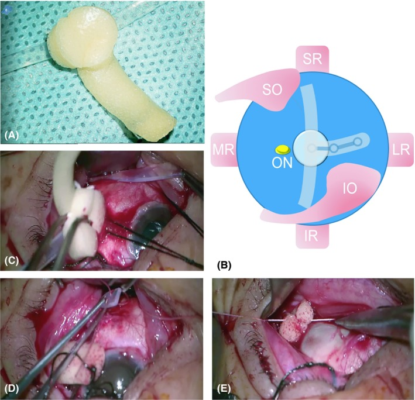
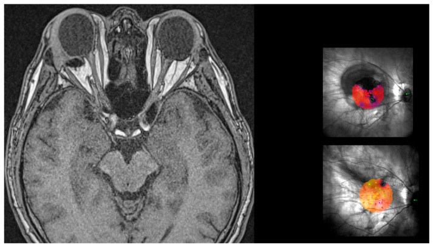
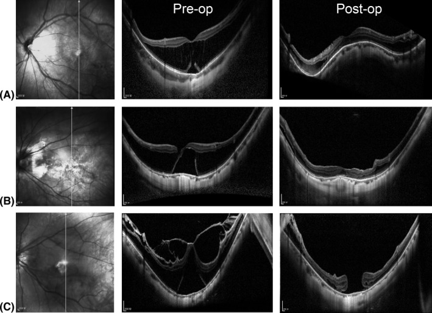

1493 — Biến chứng đai hoàng điểm (macular buckle): song thị, lộ đai, chèn ép thị thần kinh — và khi nào phải tháo
Tags: pattern:nhin-doi pattern:han-che-van-nhan pattern:lo-vat-lieu pattern:lom-hac-mac pattern:bong-vong-mac vung:mat vung:hoang-diem vung:hoc-mat protocol:MRI protocol:CT protocol:B-scan protocol:OCT protocol:macular-buckle
Mức chắc chắn (certainty): tổng hợp y văn (literature synthesis). Số liệu biến chứng lấy từ các loạt đai hoàng điểm (MB) có ảnh/số cụ thể (RCT 40 mắt, PMC7216842, CC BY 4.0; loạt NPB 40 mắt, Eur J Ophthalmol 2025, DOI 10.1177/11206721241310471; 42 bệnh nhân đánh giá vận nhãn, J Pediatr Ophthalmol Strabismus 2026, DOI 10.3928/01913913-20260317-02; 155 mắt, PMC9129984, CC BY 4.0; 50 mắt đai chữ L, Retina 2015, DOI 10.1097/IAE.0000000000000613). Phần "khi nào tháo" là tổng hợp có suy luận: bằng chứng trực tiếp cho MB chỉ gồm một ca tháo đai (PMC10583029, DOI 10.1136/bcr-2023-254978) và các loạt nhỏ; nguyên tắc thời điểm mượn từ hai loạt tháo đai củng mạc (35/2.375 mắt, PMC13326349, CC BY 4.0; 50 mắt, Ophthalmic Surg Lasers Imaging Retina 2021, DOI 10.3928/23258160-20210302-04) — chỗ nào suy luận đều ghi rõ.
Câu chốt: đai hoàng điểm chữa bong bằng độn ép cơ học từ ngoài vào (ab externo), nên biến chứng của nó cũng là biến chứng cơ học: dải đai luồn dưới cơ chéo dưới – cơ chéo trên – cơ trực và bản đai nằm sau cực → hạn chế vận nhãn, lệch trục, song thị, và muộn hơn là lộ đai/nhiễm. Trong loạt NPB 40 mắt, 32,5% phải mổ chỉnh vị trí đai vì lệch tâm (decentration), nhưng 0% phải tháo (DOI 10.1177/11206721241310471); trong loạt 155 mắt, 97,42% áp võng mạc ngay lần mổ đầu, 100% ở 2 năm, còn rối loạn vận nhãn/song thị giảm dần và hết trong 2 năm ở "gần như tất cả" (PMC9129984). Nghĩa là: đa số song thị sau đai là tạm thời — tháo đai là quyết định đánh đổi, phải có ngưỡng.
Phân vai với bài khác: 1878 trả lời "đai hay cắt dịch kính" và cách đặt đai; 1879 phủ lỗ hoàng điểm mới sau mổ bong; 445 phủ bong có lỗ ngoại vi; 429 phủ đo trục nhãn cầu bằng MRI/CT (nền tảng cho mục 4.1); 449 phủ chấn thương/dị vật. Bài này chỉ trả lời một câu: sau đặt đai hoàng điểm, bệnh nhân nhìn đôi/lộ đai/chèn ép thị thần kinh — cơ chế nào, phân biệt với gì, và tháo đai lúc nào mà không làm mất võng mạc.
1. Tổng quan bệnh học – cơ chế hình ảnh (TẠI SAO đai gây song thị, và TẠI SAO tháo đai lại nguy hiểm)
1.1 Đai hoàng điểm là gì — ba con số giải phẫu quyết định mọi biến chứng
Đai hoàng điểm (macular buckle, MB) là vật liệu độn đặt ngoài củng mạc tại cực sau, ép lõm hắc mạc (posterior staphyloma) phẳng lại để hạ lực trước–sau — lực mà cắt dịch kính không sửa được (bài 1878). Ba đặc điểm giải phẫu biến nó thành nguồn biến chứng:
- Đường đi của dải đai (band): dải luồn dưới cơ trực ngoài (lateral rectus), rồi vòng qua cơ chéo dưới (inferior oblique), cơ trực dưới, cơ trực trên và cơ chéo trên để ra phía mũi (sơ đồ PMC7216842 Fig 2B; kỹ thuật tương tự trong PMC8917523). Mỗi cơ bị dải đai nâng lên khỏi nhãn cầu một khoảng cố định → đổi vector kéo của cơ đó.
- Bản đai (plate/wedge) nằm sau cực, sát hoàng điểm, đẩy nhãn cầu vào trong → giảm thể tích hốc mắt sau và rút ngắn trục nhãn cầu (AL). AL giảm 1,21 mm (50 mắt, đai chữ L, Retina 2015), 2,3 mm (28,5 → 26,2 mm, đai chữ T, PMC8917523), 1,5 mm (31,5 → 30,0 mm, NPB, DOI 10.1177/11206721241310471).
- Vật liệu nằm dưới kết mạc – Tenon, chỉ được che bởi kết mạc mỏng ở vùng rìa phía trên–thái dương → lộ đai (exposure) là biến chứng muộn đặc trưng (5–15%).

*Đai chữ T: (A) silicone sponge + tấm titanium + dải silicon vòng; (B) sơ đồ nhìn từ sau: ba nhánh đai nằm dưới các cơ trực (SR, IR, LR, MR), dưới cơ chéo trên (SO) và chéo dưới (IO), đầu đai hướng về hoàng điểm, cách thị thần kinh (ON); (C–E) thì đặt đai vào khoang dưới Tenon. Nguồn: Acta Ophthalmol 2020 (PMC7216842), CC BY 4.0.*
Tại sao điều này quan trọng: bất kỳ triệu chứng nhìn đôi nào sau MB cũng phải được đọc theo đường đi của dải đai, không phải theo "tổn thương thần kinh". Cơ bị vướng → hạn chế cơ học (restriction); cơ bị cắt/khâu lệch → lệch trục thật (strabismus); đầu đai quá dài ra sau → chạm thị thần kinh.
1.2 Năm cơ chế — mỗi cơ chế có một kiểu hình ảnh và một cách xử lý khác nhau
| Cơ chế | Vì sao xảy ra (vật lý/mô học) | Kiểu lâm sàng | Chìa khóa xác nhận |
|---|---|---|---|
| 1. Vướng cơ học do dải đai (restriction) | Dải đai nâng cơ khỏi nhãn cầu + xơ hóa quanh đai trong hốc mắt → chiều dài hiệu dụng của cơ giảm | Hạn chế nâng mắt (elevation deficit), lác dưới (hypotropia), song thị khi nhìn lên/ngang; thường không đau | Forced duction dương tính; cover test; không có dấu thần kinh khu trú |
| 2. Lệch trục do cắt/khâu cơ | Cắt cơ trực ngoài/chéo trên để đặt đai (PMC6256907) hoặc khâu cơ lệch vị trí | Lác ngang (esotropia), song thị ngay sau mổ, đầu lệch tư thế | Tiền sử mổ; đo độ lác trước–sau; không hạn chế khi kéo thụ động |
| 3. Phù/nề mô mềm cấp | Chấn thương cơ học + phù quanh đai trong 2–8 tuần; độn đai cao lúc đầu rồi giảm dần | Song thị nhẹ, hạn chế vận nhãn thoáng qua, cải thiện theo tuần | Theo dõi 3–6 tháng; hình ảnh không có lộ đai/nhiễm |
| 4. Lộ đai – nhiễm | Kết mạc mỏng trên nhánh thái dương; đầu đai quá dài (DLN < 11 mm) hoặc cọ xát | Lộ trắng vật liệu, chảy nước mắt, đỏ; nhiễm → mủ, đau, tiết dịch | Đèn khe + cấy dịch; phân biệt lộ không nhiễm vs nhiễm |
| 5. Chèn ép thị thần kinh (hiếm) | Đầu đai quá dài/ra sau, cọ vào dây thị hoặc vòng xơ quanh dây | Giảm thị lực, khiếm khuyết thị trường, đĩa thị phù/nhợt; không song thị đơn thuần | MRI hốc mắt thấy đai chạm/chèn dây thị; OCT RNFL; thị trường |
1.3 Số liệu biến chứng theo từng loạt — bảng để nhớ, không để đoán
| Loạt (nguồn) | n | Song thị | Rối loạn vận nhãn | Lộ đai | Nhiễm | Tháo đai | Ghi chú |
|---|---|---|---|---|---|---|---|
| RCT đai vs cắt dịch kính (PMC7216842) | 40 đai / 38 PPV | 5% (2/40) | Lác trong 2,5% (1/40) | 2,5% (1/40) | 0 | 1 mắt (lộ tái diễn) | Tăng IOP thoáng qua 37,5%; đục thủy tinh thể 7,5% vs 28,9% |
| NPB (DOI 10.1177/11206721241310471) | 40 | 7,5% (3) | Hạn chế nâng 5% (2) | 7,5% muộn (tháng 6) | 0 | 0% | 32,5% mổ chỉnh vị trí vì lệch tâm |
| Đánh giá vận nhãn NPB (DOI 10.3928/01913913-20260317-02) | 30 (42 − 12 loại trừ) | 30% (9) | Hạn chế nâng 43%, lác dưới 33% | 0 | 0 | 0% | 7/9 đeo lăng kính; 2 từ chối điều trị |
| Loạt 155 mắt (PMC9129984) | 155 | "Gần như tất cả" | "Gần như tất cả" | — | 0 | 0 (2 chỉnh đai) | Áp 97,42% lần đầu, 100% ở 2 năm; hết trong 2 năm |
| Đai chữ L (Retina 2015) | 50 | 7,7% | — | 15% (conjunctival erosion) | — | — | 30% (6/20) phải rút ngắn đai vì lộ nhánh (mẫu đai đầu) |
| Đai chữ T (PMC8917523) | 25 | — | — | — | 0 | 0 | Xuất huyết dưới võng mạc 3; bong hắc mạc xuất huyết 2; 1 cơn glaucoma góc đóng hai mắt |
1.4 TẠI SAO đa số song thị lại hết — và vì sao điều đó đổi hoàn toàn cách xử trí
Ba lý do vật lý khiến triệu chứng giảm dần:
- Độ cao của độn giảm theo thời gian. Đai silicon/titanium không "xẹp", nhưng phù quanh đai giảm và mô xơ co lại → lực căng lên cơ giảm; loạt 155 mắt ghi rõ "triệu chứng giảm dần và hết trong 2 năm" khi độ cao độn giảm (PMC9129984).
- Hiện tượng dung nạp trung ương (sensory adaptation). Ở người còn thị lực hai mắt, não ức chế ảnh lệch; song thị chỉ tồn tại khi chênh lệch đủ lớn hoặc không còn khả năng ức chế.
- Trương lực cơ thích nghi: cơ bị nâng lên vẫn co được; nếu không có xơ hóa cố định, độ lệch giảm.
Ngược lại, ba lý do khiến một số ít không hết: (a) xơ hóa dày quanh đai (đặc biệt nếu đai quá cao/quá dài); (b) tổn thương cơ trực tiếp khi cắt/khâu; (c) lệch tâm đai làm đai không nằm dưới hoàng điểm — vừa mất tác dụng điều trị, vừa tạo lực lệch.
Hệ quả thực hành: không tháo đai vì song thị trong 3 tháng đầu nếu võng mạc đang áp và không có lộ/nhiễm — vì khả năng tự hồi phục cao và vì tháo đai = bỏ tác dụng cơ học (xem 1.5).
1.5 TẠI SAO tháo đai là quyết định đánh đổi: bài học từ đai củng mạc
Đai hoàng điểm không có dữ liệu lớn về tháo; nhưng nguyên lý thì giống đai củng mạc (scleral buckle):
- Loạt 2.375 mắt đặt đai củng mạc: 1,5% (35 mắt) phải tháo; nhiễm 34%, đau 31%, lộ không nhiễm 14%, lác/song thị 8,6%; thời gian trung vị tới tháo: 2,4 tháng (nhiễm) so với 12,6 tháng (không nhiễm) (p = 0,006) (PMC13326349).
- Tái bong võng mạc sau tháo: 11% (4/35), trong đó 3/4 ca tái bong xảy ra khi tháo trong tháng đầu; tất cả tái bong trong 3 tháng; thị lực vẫn cải thiện (0,70 → 0,30 logMAR).
- Loạt 50 mắt tháo đai: lộ đai 54%, nhiễm 26%, song thị 16%, tái bong 4%; biến chứng sau tháo: tái bong 12%, tăng IOP thoáng qua 6%, song thị dai dẳng 4%; thời gian trung vị 30 tháng; thị lực không đổi (Ophthalmic Surg Lasers Imaging Retina 2021).
→ Ba bài học chuyển sang MB: (1) tháo sớm (< 1 tháng) nguy hiểm nhất vì chưa có dính hắc–võng mạc vững; (2) nhiễm là chỉ định tháo sớm, không chờ; (3) tháo đai không làm thị lực xấu đi ở phần lớn mắt — nhưng có thể tái bong, nên phải chuẩn bị phương án.
2. Mẫu hình + chẩn đoán phân biệt theo thời điểm và theo triệu chứng (gamut)
2.1 Mẫu hình chốt — "song thị + hạn chế nâng mắt sau đai, đáy mắt ổn định"
Bộ ba gợi ý biến chứng cơ học của đai (không phải bệnh mới):
- Tiền sử đặt đai hoàng điểm trong 6 tháng–nhiều năm (thường mắt cận thị nặng, AL > 26,5 mm);
- Song thị ở tư thế nhìn lên/ngang ± lác dưới; đo hạn chế nâng mắt rõ hơn hạn chế hạ;
- Đáy mắt/OCT: võng mạc áp, hõm được độn — nếu võng mạc bong lại thì triệu chứng do bong, không phải do đai.
2.2 Gamut theo thời điểm — cùng một triệu chứng, cơ chế khác nhau
| Thời điểm | Nguyên nhân hay gặp | Vì sao | Hướng xử lý |
|---|---|---|---|
| ≤ 1 tháng | Phù/nề mô mềm, đau, tăng IOP, phản ứng với vật liệu | Chấn thương mổ + độn cao | Theo dõi + giảm đau/hạ IOP; không tháo nếu không nhiễm/lộ |
| 1–6 tháng | Xơ hóa quanh đai, cắt cơ, lệch tâm đai | Mô xơ co → tethering; đai trượt khỏi hoàng điểm | Chỉnh vị trí đai nếu lệch; lăng kính/orthoptics |
| > 6 tháng | Lộ đai, nhiễm mạn, chèn ép thị thần kinh, song thị cố định | Kết mạc mỏng dần; xơ dày; đầu đai cọ dây thị | Tháo/ chỉnh đai theo ngưỡng mục 4.3 |
2.3 Gamut theo triệu chứng chính — bốn cửa vào, bốn nhóm bệnh
A. Nhìn đôi (diplopia) sau đai:
- Vướng cơ học do đai (hay nhất — 5–30% tuỳ loạt, và 43% hạn chế nâng trong loạt đánh giá vận nhãn);
- Lác do cắt/khâu cơ (esotropia 2,5%);
- Liệt dây IV sẵn có bị mất bù (bệnh nhân cận thị nặng lớn tuổi có thể đã có lác trong–lác dọc nhẹ từ trước — 29% bị loại khỏi nghiên cứu vận nhãn vì đã có rối loạn vận nhãn trước mổ, DOI 10.3928/01913913-20260317-02);
- Song thị do lệch khúc xạ/aniseikonia sau khi AL giảm 1,2–2,3 mm (hiếm, nhưng phải đo khúc xạ hai mắt);
- Song thị trung ương do tổn thương hoàng điểm (nhìn đôi một mắt — "diplopia monocularis") — không phải song thị hai mắt, đừng tháo đai.
B. Nhìn mờ/giảm thị lực sau đai:
- Bong võng mạc tái phát hoặc lỗ hoàng điểm mở lại (phải loại trừ trước khi quy mọi thứ cho đai);
- Chèn ép thị thần kinh (hiếm; khiếm khuyết thị trường, đĩa phù);
- Đục thủy tinh thể (7,5% trong RCT; nhiều hơn nếu kèm cắt dịch kính);
- Bệnh võng mạc cận thị tiến triển/CNV (không liên quan đai).
C. Đỏ – chảy nước mắt – lộ vật liệu:
- Lộ đai không nhiễm (conjunctival erosion — 15% loạt đai chữ L);
- Nhiễm đai/áp-xe hốc mắt (mủ, đau nhiều, phù mi);
- Dị ứng vật liệu (hiếm);
- Viêm kết mạc – khô mắt (không liên quan trực tiếp).
D. Đau sâu/hốc mắt:
- Đau do độn ép (thường giảm dần);
- Nhiễm;
- Chèn ép thần kinh;
- Tăng IOP (37,5% tăng thoáng qua trong RCT).
2.4 Phân biệt "vướng cơ học" với "liệt thần kinh" — ba nghiệm pháp tại giường
| Nghiệm pháp | Vướng cơ học do đai | Liệt dây IV | Liệt dây VI |
|---|---|---|---|
| Forced duction (kéo thụ động) | Dương tính (cơ căng, không cho mắt lên) | Âm tính | Âm tính |
| Cover test | Lác dưới/ngang ổn định, không tăng khi nhìn về phía cơ liệt | Hypertropia tăng khi nghiêng đầu về bên tổn thương, giảm khi nghiêng bên đối diện | Esotropia tăng khi nhìn sang bên liệt |
| Bielschowsky | Không điển hình | Dương tính | Không áp dụng |
| Đáp ứng lăng kính | Có thể giảm khi đeo lăng kính | Cần lăng kính lớn | Cần lăng kính lớn |
Cạm bẫy: bệnh nhân cận thị nặng một mắt có thể không có song thị dù lác rõ — vì mất thị lực một mắt từ trước. Luôn hỏi "nhìn đôi khi che một mắt hay hai mắt?" (monocular vs binocular).
3. Bảng so sánh phân biệt (ma trận đối chiếu)
| Thực thể | Hình ảnh/lâm sàng điển hình | Chốt vào (rule-in) | Chốt loại (rule-out) | Gợi ý xác nhận |
|---|---|---|---|---|
| Vướng cơ học do đai (bài này) | Song thị khi nhìn lên/ngang, hạn chế nâng 43%, lác dưới 33%; OCT: võng mạc áp, hõm độn | Tiền sử MB + forced duction dương + đáy mắt ổn định | Võng mạc bong/lỗ mở → nguyên nhân là bệnh, không phải đai | Cover test + forced duction; OCT |
| Lác do cắt/khâu cơ | Esotropia 2,5%, song thị ngay sau mổ, không hạn chế thụ động | Lác xuất hiện ngay sau mổ + không restriction | Hạn chế thụ động rõ → do đai/xơ | So góc lác trước–sau; ghi nhận cơ đã cắt |
| Liệt dây IV sẵn có | Hypertropia, nghiêng đầu, Bielschowsky (+) | Bielschowsky dương + tiền sử | Forced duction dương + không đáp ứng nghiêng đầu | Nghiệm pháp nghiêng đầu; MRI nếu cần |
| Lộ đai không nhiễm | Đốm trắng vật liệu dưới kết mạc, không mủ, không đau nhiều | Thấy vật liệu + cấy âm | Mủ/đau/phù mi → nhiễm | Đèn khe; cấy trước khi dùng kháng sinh |
| Nhiễm đai/áp-xe hốc mắt | Đau tăng, mủ, phù mi, có thể lồi mắt/hạn chế vận nhãn nặng | Mủ + cấy (+) + hình ảnh tụ dịch quanh đai | Chỉ đỏ kết mạc, không mủ → lộ đơn thuần | CT/MRI hốc mắt; cấy; kháng sinh |
| Chèn ép thị thần kinh | Giảm thị lực, khiếm khuyết thị trường, đĩa phù/nhợt; MRI thấy đai chạm dây thị | MRI: đai tiếp xúc/chèn dây thị + thị trường tương ứng | MRI: đai cách dây thị (như ca 11 năm, PMC11270332 Fig 11) | MRI T1 hốc mắt; OCT RNFL; thị trường |
| Tái bong võng mạc | Bong lại, OCT: mất áp, có thể lỗ mở | OCT/B-scan: bong + lỗ | Võng mạc áp, hõm độn tốt | B-scan + OCT trước mọi quyết định tháo |
| Song thị một mắt (monocular) | Nhìn đôi khi che một mắt, do hoàng điểm/bệnh võng mạc | Che một mắt vẫn đôi | Hai mắt đôi, che một mắt hết → cơ học/lác | Hỏi bệnh + Amsler; OCT hoàng điểm |
| Lệch khúc xạ/aniseikonia | Nhìn mờ/nhức, không lác, AL giảm sau đai | Đo khúc xạ hai mắt chênh > 2 D | Lác thật/restriction | Khúc xạ + sinh trắc |

(a) B-scan trước mổ: lõm hắc mạc lớn + bong hoàng điểm (mũi tên); (b) sau mổ: lõm phẳng lại do đai; (c) OCT trước: lỗ tầng trong + bong + schisis; (d) sau: phẳng lõm, hết lỗ tầng/bong; (e) fundus: võng mạc áp. Đây là bằng chứng cơ học rằng đai đang tác động đúng chỗ — cũng là thứ mất đi nếu tháo đai. Nguồn: Int J Retina Vitreous 2024 (PMC11350928), CC BY 4.0.
4. Protocol chụp + ngưỡng và quy trình tháo đai
4.1 Protocol hình ảnh và đánh giá chức năng
Trước mổ (baseline bắt buộc — vì 29% đã có rối loạn vận nhãn từ trước):
- Đo thị lực từng mắt + khúc xạ; ghi rõ song thị hai mắt hay một mắt.
- Đánh giá vận nhãn – lác: cover/uncover, alternate cover, 9 hướng nhìn, đo độ lác bằng lăng kính, Worth 4 chấm, stereopsis (Titmus/TNO).
- OCT hoàng điểm EDI/SS-OCT (raster 6 × 6 mm hoặc 12 mm): lỗ, SRF, schisis, màng trước võng mạc; độ cao độn sau mổ.
- B-scan 10 MHz: độ sâu lõm hắc mạc, vị trí đầu đai so với hoàng điểm, áp võng mạc khi OCT bị chặn.
- Sinh trắc AL (IOLMaster/Lenstar): AL > 26,5 mm; đai làm AL giảm 1,2–2,3 mm → đừng dùng AL trước mổ để tính IOL sau mổ (bài 1490 cho nguyên lý tương tự với khí).
- MRI hốc mắt T1 (± fat-sat), không cần gadolinium: thấy profile đầu đai, khoảng cách tới dây thị, hình dạng nhãn cầu; dùng được với silicon/titanium (loạt NPB theo dõi 11 năm bằng MRI — PMC11270332 Fig 11). CT chỉ khi chống chỉ định MRI hoặc cần xương: đai tăng đậm độ, artifact beam-hardening che mô xung quanh.
- Đo DLN (distance from limbus to needle) theo nomogram AL: giữ DLN ≥ 11 mm để tránh lộ nhánh thai dương (khuyến cáo của loạt NPB).
Sau mổ:
| Mốc | Việc phải làm |
|---|---|
| Ngày 1 | Thị lực, IOP (tăng tới 37,5%), đèn khe tìm lộ đai sớm, OCT/B-scan nếu nghi bong |
| Tuần 1–2 | Đo lại vận nhãn; hướng dẫn tập nhìn 9 hướng để giảm xơ hóa quanh đai (khuyến cáo NPB) |
| Tháng 1 | Cover test + OCT; phân loại song thị sớm (thường tự hồi phục) |
| Tháng 3–6 | Đánh giá song thị tồn tại; B-scan/MRI nếu nghi lệch đai/chèn thị thần kinh |
| Hằng năm | OCT, B-scan, AL, MRI nếu có triệu chứng thần kinh thị; theo dõi lộ đai muộn |
4.2 Ba ngưỡng định lượng cần nhớ
| Đại lượng | Ngưỡng | Ý nghĩa |
|---|---|---|
| AL | > 26,5 mm (hoặc SE < −8 D) | Định nghĩa cận thị nặng; tiêu chuẩn vào RCT đai (PMC7216842; xem thêm bài 1878) |
| AL giảm sau đai | 1,2–2,3 mm | Tương đương ~+3 đến +6 D (quy đổi gần đúng 1 mm ≈ 2,5–3 D) → hyperopic shift, ảnh hưởng tính IOL |
| DLN | ≥ 11 mm | Dưới ngưỡng → nguy cơ lộ nhánh đai (khuyến cáo NPB) |
| Độ cao độn | Đủ để phẳng lõm hắc mạc trên B-scan/OCT | Không đo bằng mm tuyệt đối; đánh giá hình dạng (phẳng, không gồ) |
| Song thị tồn tại | > 6 tháng dù đã lăng kính/orthoptics | Ngưỡng cân nhắc can thiệp (suy luận từ diễn tiến tự nhiên 2 năm — PMC9129984) |
Lưu ý trung thực: con số 1 mm ≈ 2,5–3 D là quy đổi gần đúng dùng trong sinh trắc, không phải số đo từ loạt MB; các loạt MB chỉ báo AL giảm, không báo khúc xạ. Ghi rõ để không "bịa" ngưỡng.
4.3 Khi nào tháo — bảng quyết định (có mức chắc chắn)
| Chỉ định | Mức ưu tiên | Thời điểm | Căn cứ |
|---|---|---|---|
| Nhiễm đai/áp-xe hốc mắt (mủ, đau, phù mi, cấy +) | Cấp | Tháo ngay + cấy + kháng sinh | Nhiễm đai là chỉ định tháo sớm; trung vị 2,4 tháng ở loạt đai củng mạc (PMC13326349) |
| Lộ đai có nguy cơ thủng/nhiễm, đau nhiều | Cấp/ sớm | Tháo hoặc chỉnh/thay đai | Lộ đai 54% chỉ định tháo trong loạt 50 mắt (OSLIR 2021) |
| Chèn ép thị thần kinh (thị trường + MRI) | Sớm | Tháo/ rút ngắn đai | MRI thấy đai chạm dây thị; ca 11 năm không chạm là hình mẫu bình thường (PMC11270332) |
| Song thị dai dẳng > 6 tháng, thất bại lăng kính/orthoptics | Bán cấp | Cân nhắc tháo hoặc mổ cơ | 7/9 ca dùng lăng kính, không ca nào tháo (DOI 10.3928/01913913-20260317-02) → tháo chỉ khi thất bại |
| Đau mạn không kiểm soát | Bán cấp | Tháo | Đau 31% chỉ định tháo ở loạt đai củng mạc (PMC13326349) |
| Lệch tâm đai + không đạt mục tiêu | Bán cấp | Chỉnh vị trí trước, tháo nếu không chỉnh được | 32,5% phải chỉnh vị trí; 0% tháo (DOI 10.1177/11206721241310471) |
| Tái bong/lỗ mở do đai không còn tác dụng | Sớm | Tháo + cắt dịch kính/đặt lại | Không có lợi giữ đai nếu đã mất tác dụng |
Nguyên tắc thời điểm (quan trọng nhất):
- Không nhiễm: nếu có thể, chờ ≥ 3 tháng sau đặt đai — vì 3/4 ca tái bong sau tháo xảy ra khi tháo trong tháng đầu, và mọi tái bong trong 3 tháng (PMC13326349). Trong thực tế các loạt tháo đai có trung vị 12,6–30 tháng.
- Nhiễm: không chờ — tháo sớm + cấy + kháng sinh; nguy cơ nhiễm lan toả (viêm mô hốc mắt, viêm nội nhãn) lớn hơn nguy cơ tái bong.
- Ca MB duy nhất được báo tháo đai: nam 70 tuổi, MHRD, đặt đai thành công; tuần 10 xuất hiện song thị + lộ đai → tháo đai; 6 tháng sau: võng mạc áp, lỗ đóng, thị lực 20/250 (PMC10583029). Đây là bằng chứng tháo đai ở MB có thể giữ được võng mạc, nhưng n = 1.
flowchart TD
A[Bệnh nhân sau đặt đai hoàng điểm có triệu chứng] --> B{Có mủ, đau tăng, phù mi?}
B -->|Có| C[Tháo đai cấp + cấy + kháng sinh]
B -->|Không| D{Thị lực giảm, khiếm khuyết thị trường?}
D -->|Có| E[MRI hốc mắt + thị trường]
E --> F{Đai chạm dây thị?}
F -->|Có| C
F -->|Không| G[OCT + B-scan tìm bong/lỗ mở]
D -->|Không| G
G --> H{Võng mạc áp, lỗ đóng?}
H -->|Không| I[Điều trị bong/lỗ — không quy cho đai]
H -->|Có| J{Song thị/hạn chế vận nhãn?}
J -->|Không| K[Theo dõi định kỳ]
J -->|Có| L{Trong 3 tháng đầu?}
L -->|Có| M[Theo dõi + orthoptics, tránh tháo sớm]
L -->|Không| N{Lộ đai hoặc đau mạn?}
N -->|Có| O[Tháo hoặc chỉnh đai]
N -->|Không| P{Lăng kính/orthoptics thất bại > 6 tháng?}
P -->|Có| O
P -->|Không| Q[Tiếp tục lăng kính + theo dõi]
5. Biến thể bình thường và cạm bẫy
5.1 Biến thể bình thường dễ nhầm
- Hõm độn (indentation dome) trên OCT sau đai: vồi lồi hắc mạc–võng mạc đúng vị trí đai, không phải u hắc mạch/hemangioma. Dấu phân biệt: bờ đối xứng theo hình đai, không có mạch nuôi, không lớn dần, và có tiền sử đặt đai. Nếu nghi ngờ: MRI thấy vật liệu đai.
- Dày hắc mạc khu trú do độn: giảm dần theo thời gian; không ngấm thuốc bất thường trên MRI.
- Lác nhẹ/ hạn chế vận nhãn nhẹ trong 3 tháng đầu: gặp ở gần như tất cả mắt trong loạt 155 mắt (PMC9129984) — không phải biến chứng cố định.
5.2 Cạm bẫy (pitfall)
- Quy mọi giảm thị lực cho "đai" mà không chụp OCT/B-scan → bỏ sót tái bong/lỗ mở. Luôn chụp trước khi quyết định tháo.
- Song thị một mắt (monocular diplopia) do bệnh hoàng điểm — không phải chỉ định tháo đai; hỏi "che một mắt còn đôi không?".
- Nhầm hạn chế nâng do đai với liệt dây IV: Bielschowsky và forced duction phân biệt; bệnh nhân 29% đã có rối loạn vận nhãn trước mổ nên không có baseline là bẫy lớn.
- Tháo đai quá sớm vì song thị: nguy cơ tái bong cao nhất < 1 tháng; đa số song thị tự hồi phục trong 2 năm.
- Bỏ qua lộ đai "nhỏ": kết mạc mỏng trên nhánh thái dương có thể thủng dần; chụp/đo DLN, xem xét rút ngắn/chỉnh đai trước khi nhiễm.
- Cấy muộn sau khi đã dùng kháng sinh → cấy âm giả; cấy trước khi bắt đầu kháng sinh.
- Tính IOL bằng AL trước mổ ở mắt đã đặt đai: AL đã giảm 1,2–2,3 mm → hyperopic surprise; cân nhắc phaco sau khi đai ổn định (khuyến cáo trong PMC6256907).
- MRI ở mắt có đai kim loại cũ (Ando wire): artifact lớn; titanium/silicon dùng MRI được nhưng vẫn có artifact → đọc cùng B-scan/CT.
6. Tự lượng giá — Blind Quiz
Ca 1 — Nam 70 tuổi, mắt phải cận thị nặng đã đặt đai hoàng điểm 11 năm, thị lực tốt. MRI hốc mắt được chỉ định vì lý do khác.

- Câu hỏi: (1) Cấu trúc nằm sau nhãn cầu phải là gì? (2) Nó có chạm thị thần kinh không? (3) Hai bản đồ vi đa giác (microperimetry) cho biết gì?
Bấm để hiện đáp án (findings + chẩn đoán)
- Findings: trên T1 axial, đầu đai hoàng điểm nằm sát thành sau–thái dương nhãn cầu phải, không chạm dây thị giác; nhãn cầu giữ hình cầu, không có khối trong nón cơ.
- Chẩn đoán: đai hoàng điểm đúng vị trí, không chèn thị thần kinh — đây là hình mẫu bình thường để so sánh khi nghi chèn ép.
- Microperimetry: trên = ám điểm lớn trước mổ; dưới = hết ám điểm sau mổ → chức năng hoàng điểm hồi phục, phù hợp với mục tiêu của đai.
- Nguồn ảnh: Vision 2024 (PMC11270332), Fig. 11, CC BY 4.0.
Ca 2 — Nữ 52 tuổi, myopic traction maculopathy, đặt đai đơn thuần. Siêu âm B-scan trước và sau mổ, OCT tương ứng.
- Câu hỏi: (1) B-scan trước mổ cho thấy gì? (2) Sau mổ thay đổi ra sao? (3) Vì sao đây là "bằng chứng cơ học" của đai?
Bấm để hiện đáp án
- Findings: (a) lõm hắc mạc lớn + bong hoàng điểm (mũi tên); (b) sau mổ lõm phẳng lại, võng mạc áp; (c) OCT trước: lỗ tầng trong + bong + schisis mũi; (d) sau: phẳng lõm, hết lỗ tầng và bong, schisis giảm; (e) fundus: võng mạc áp.
- Chẩn đoán: đai hoàng điểm tác động đúng — độn ngoài củng mạc làm phẳng lõm hắc mạc, hạ lực trước–sau; đây là thứ mất đi nếu tháo đai.
- Nguồn ảnh: Int J Retina Vitreous 2024 (PMC11350928), Fig. 3, CC BY 4.0.
Ca 3 — Bệnh nhân sau đặt đai hoàng điểm 4 tháng: nhìn đôi khi nhìn lên và sang phải, không đau, không mủ, OCT võng mạc áp, lỗ đóng. Ảnh OCT 12 tháng của một mắt đặt đai điển hình:

- Câu hỏi: (1) Hình OCT sau mổ mô tả gì? (2) Cơ chế song thị khả dĩ nhất? (3) Có nên tháo đai ngay không?
Bấm để hiện đáp án
- Findings: (A) cột trái = ảnh hồng ngoại; giữa = OCT trước mổ (schisis/bong); phải = sau 12 tháng: võng mạc áp, hõm được độn lồi lên, không còn khoang dịch.
- Cơ chế: vướng cơ học do dải đai (hạn chế nâng/lác dưới) — phù hợp với 43% hạn chế nâng và 33% lác dưới trong loạt đánh giá vận nhãn; không phải nhiễm (không mủ/đau) và không phải chèn thị thần kinh (thị lực không giảm, không khiếm khuyết thị trường).
- Xử trí: không tháo ngay — trong 3–6 tháng đầu, đa số giảm dần; cho lăng kính/orthoptics, theo dõi 6 tháng. Chỉ cân nhắc tháo/chỉnh đai nếu song thị dai dẳng > 6 tháng hoặc có lộ đai/đau/chèn ép. Tháo sớm < 1 tháng làm tăng tái bong (3/4 ca tái bong xảy ra khi tháo trong tháng đầu — PMC13326349).
- Nguồn ảnh: Acta Ophthalmol 2020 (PMC7216842), Fig. 3, CC BY 4.0.
Bài liên quan chéo
- 1878 – Bong võng mạc do lỗ hoàng điểm ở mắt cận thị nặng (MHRD): chọn đai hay cắt dịch kính
- 1879 – Lỗ hoàng điểm mới sau mổ bong võng mạc
- 445 – Bong võng mạc có lỗ ngoại vi
- 429 – Đo trục nhãn cầu bằng MRI/CT
- 1490 – Sinh trắc & công suất IOL ở mắt bơm khí
- 400 – Tổng quan Mắt & thị giác
Ảnh
- 4 ảnh gốc, không crop/ghép, giấy phép từng file trong
images/CREDITS.md. - Không tạo ảnh ghép trong bài này: ba hình là hình nhiều ô có nhãn nội bộ (a–e / A–E) do tạp chí đặt; cắt/ghép sẽ làm mất nhãn và sai ngữ cảnh (MRI + microperimetry, B-scan + OCT + fundus, implant + sơ đồ + thì mổ).
Disclaimer y tế: bài học dùng cho đào tạo và tra cứu; không dùng để chẩn đoán độc lập khi chưa có người hướng dẫn. Mọi ngưỡng tháo đai phải cá thể hoá theo tình trạng võng mạc, thị lực và nguyện vọng bệnh nhân.